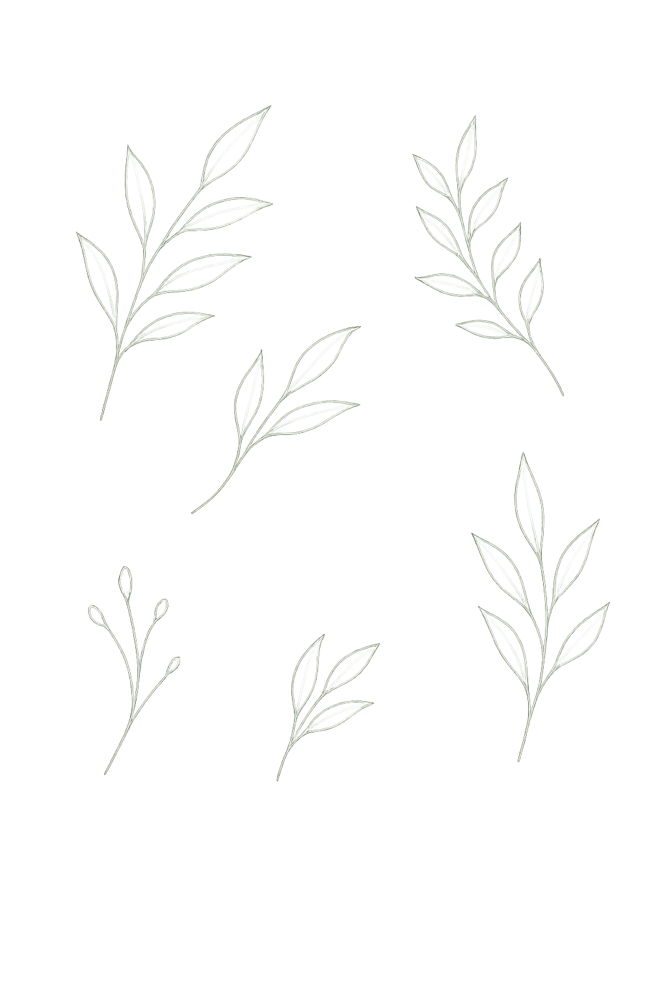
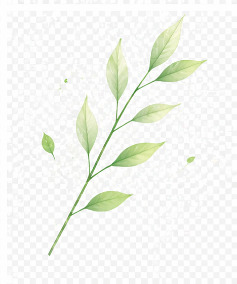
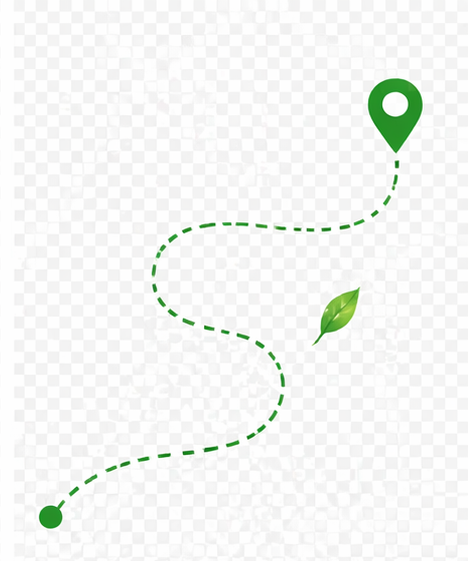
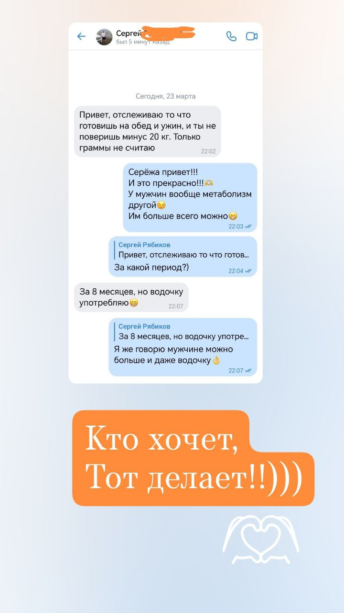
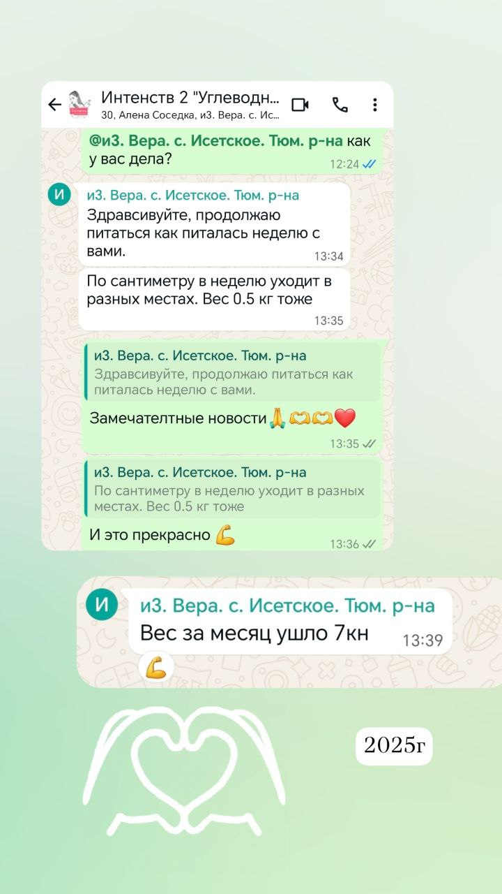
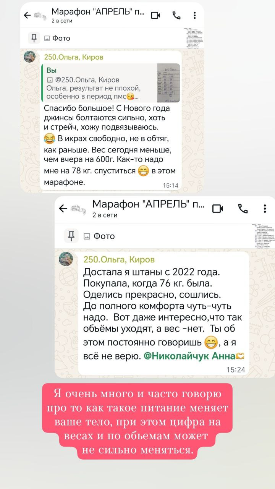
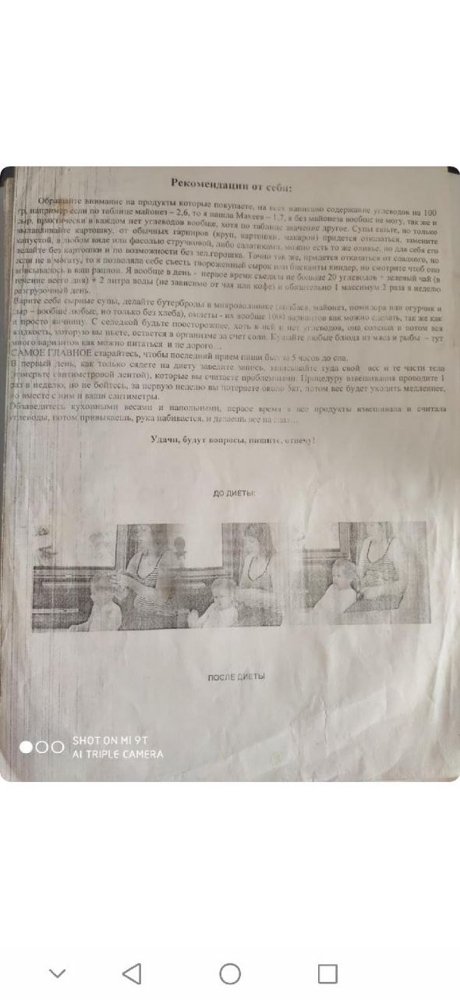
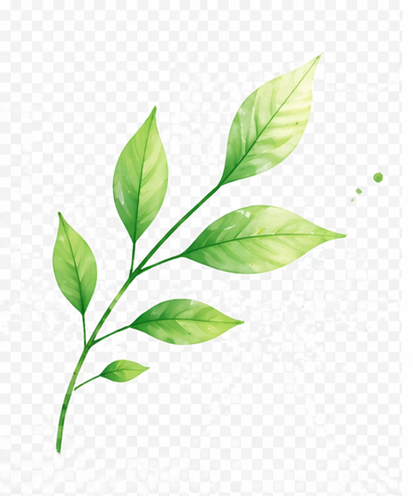

Жёсткий старт
Вы резко ограничиваете себя, держитесь несколько дней, а потом устаете и срываетесь.




Стройность без крайностей
Помогаю женщинам выстраивать понятную систему питания, которую можно внедрить в обычную жизнь и удерживать без хаоса, чувства вины и новых попыток начать заново.
Для тех, кто устал худеть через запреты и силу воли
изучаю и практикую низкоуглеводное питание

Реальные результаты
Скрины переписок и фото — без фотошопа и без прикрас
«Отслеживаю то что готовишь на обед и ужин — и не поверишь, минус 20 кг. Только граммы не считаю»
«Продолжаю питаться как питалась неделю с вами. По сантиметру в неделю уходит в разных местах»
«За 1 месяц. 70,7 кг → 67,1 кг. Рост 168 см. Без подсчёта калорий и жёстких диет»
«Достала штаны с 2022 года — оделись прекрасно. Объёмы уходят, даже когда вес не меняется»




За 1 месяц · Без жёстких диет · Без подсчёта калорий

День начинается с надеждой, а заканчивается усталостью, срывом и мыслью: «снова не получилось».
И дело не в вас. Очень часто вам просто никто не показал путь, который можно выдержать в реальной жизни.
Очень многие женщины годами думают, что с ними что-то не так. Что они недостаточно собранные, недостаточно дисциплинированные, недостаточно стараются.
Но если вы много раз пытались похудеть, держались какое-то время, а потом снова срывались, это ещё не значит, что проблема в вас.
Чаще всего проблема в другом: вы слишком долго пытаетесь снижать вес через запреты, напряжение и борьбу с собой, а не через систему, которую можно встроить в обычную жизнь.
Вы резко ограничиваете себя, держитесь несколько дней, а потом устаете и срываетесь.
Нет понятной структуры, сытости и опоры на день, поэтому всё рушится к вечеру.
После срыва вы не понимаете, как вернуться спокойно, и снова уходите в «всё пропало».
Работа, семья, дети, усталость, готовка, и очередная схема просто не выдерживает реальность.
Новый путь
Работает более спокойный и понятный подход:
Именно так я и работаю со своими участницами: не ломаю, а помогаю выстроить понятный путь без крайностей.
Система без срывов
Это подход, в котором вы не живёте на жёстких запретах, не считаете каждую калорию и не пытаетесь снова стать «идеальной».
Не через давление, а через систему, понятность, поддержку и сопровождение на первых шагах.
убираете хаос из питания
начинаете лучше понимать свой голод
уменьшаете количество срывов
выстраиваете рацион под обычную жизнь
приходите к более спокойному снижению веса
получаете личную поддержку на старте
Мой подход вырос из личного опыта, практики и многолетней работы с женщинами, а не из чужих шаблонов.
Меня зовут Анна Николаичук. Я мама четверых детей, и тема веса, питания и возвращения в форму для меня не теория из интернета, а часть моей собственной жизни.
Я сама много раз проходила путь возвращения в форму, искала не «идеальную диету», а питание, которое можно выдержать в обычной жизни.
Низкоуглеводное питание я изучаю и практикую с 2007 года. С 2018 года веду программы и помогаю женщинам не просто худеть, а выстраивать систему, которую можно удерживать.
В моём личном пути был диагноз преддиабет. Через питание я смогла восстановить состояние и поэтому говорю не только из методик, а из опыта, который прошла сама.
Кому подойдёт
Результат системы
Вы понимаете, что есть, как собрать день и как не жить в хаосе.
Не потому что вы «стали сильнее», а потому что день больше не строится на голоде и напряжении.
Уходит постоянная мысль «я опять не справляюсь».
Питание становится выполнимым дома, в семье, на работе, в обычной жизни.
Первый шаг
Если вы хотите не просто читать, а сделать первый спокойный шаг, выберите тот формат, который ближе вам сейчас: чат, история или полезный материал на почту.
Если хотите начать с поддержки, разборов и спокойного пространства, где можно сделать первый шаг без давления.
Хочу доступ в секретный чатЕсли хотите сначала ближе познакомиться со мной и понять, через какой путь родился этот спокойный подход.
Узнать мою историюЕсли вам хочется начать мягко и в своём темпе, оставьте email. Я пришлю разбор, который поможет понять, с чего начать без жёсткости, чувства вины и новых откатов.
Как я могу вам помочь
Если вам откликается мой подход и вы понимаете, что вам нужен не очередной жёсткий старт, а понятный путь с поддержкой, вы можете пойти со мной глубже.
Хочу доступ в секретный чатВ сопровождении мы работаем не в общем, а очень конкретно:
Ответы на ваши вопросы
Именно поэтому здесь нужен не новый рывок, а другой подход.
Система выстраивается под обычную жизнь, а не под идеальную картинку.
Подход как раз не строится на постоянном подсчёте.
Здесь важно не идеальное поведение, а умение спокойно возвращаться, а не уходить в «всё пропало».
Возможно, вам нужен не новый понедельник, а наконец понятный путь, который можно пройти спокойно, шаг за шагом.
Хочу доступ в секретный чатПеред уходом
Если вам откликается спокойный путь без жёсткости, сохраните для себя понятную опору: можно перейти в секретный чат или сначала прочитать мою историю.